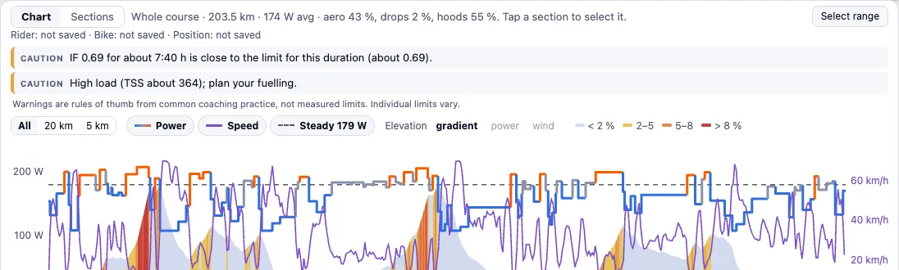

Built on published physics
A published power balance: rolling resistance, air drag by position (aero, hoods, drops), gravity and the wind at every step of the course, ridden through in 20 m steps. The plan puts power where a watt buys the most time, at the same normalized power.
